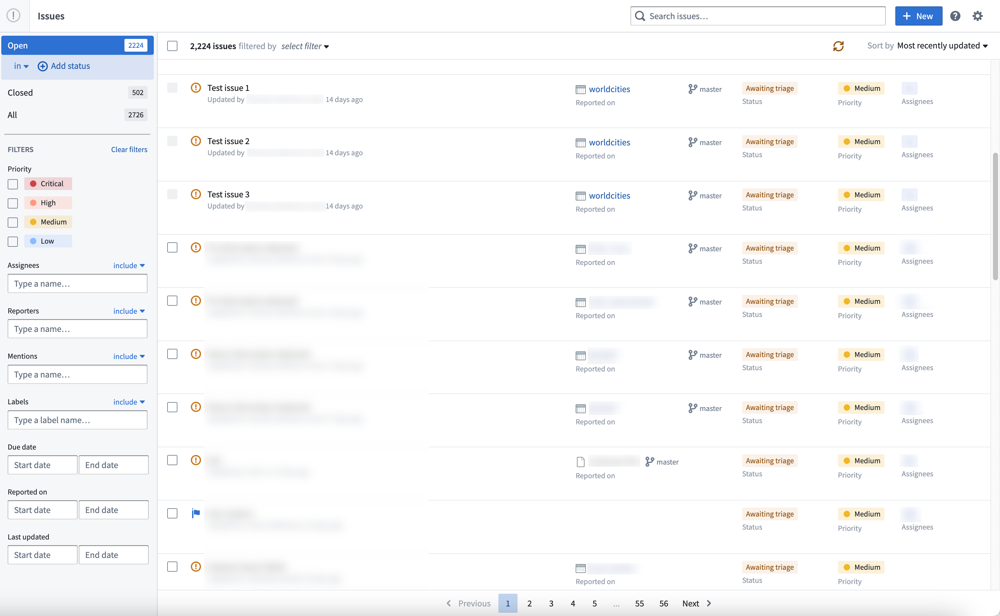

Help and support
If you encounter any issues while using the Palantir platform, you can review guidance on how to investigate, diagnose, and find a suitable resolution below.
1. Investigate the issue
Before submitting a support request, follow the steps below to address a potential issue. By collecting the information outlined below, the investigation process can be expedited and help us to provide an optimal resolution.
- Start by reviewing error messages from the platform and compile them into a document.
- If an error is not clear or does not provide actionable next steps, use Chrome⢠Developer tools to gather more information on the issue.
- Consider whether any changes were made since the platform was last behaving as expected. Try reverting these changes and test if the issue is resolved.
- Check status emails, alerts, and announcements for known issues or planned maintenance that might affect your work.
- Search the platform documentation to see if there are useful suggestions.
- Copy the errorID/errorInstanceID and share it with support.
- Use Data Lineage to investigate issues with your pipeline (for example, permissions, build status, build schedules, etc.)
* Selecting different node coloring options (For example,
Time last built or Permissions) allows you to highlight different characteristics of the resources in a pipeline.
2. Search the Issues application and the Developer Community
With the additional information you have obtained from investigating on your own, you can visit:
- The Issues application to see issues reported by other users which may help resolve or provide insight into your issue. This application provides transparency into questions in the platform by tracking past questions, providing previous engagement from Palantir Support, and a timeline on issue resolution.

- The Palantir Developer Community â to ask and answer questions from your fellow users. Here, you will find questions asked by other Palantir users and get help on the issue you are facing.
Further assistance
In cases where you are not able to find a solution either from resources above or our platform documentation, learn how to prepare and file a support ticket which details how to collect debugging information and create a similar example so that Palantir Support is armed to provide a quick resolution to your issue.
Chrome⢠is a trademark of Google Inc.